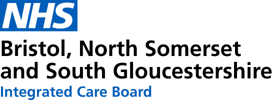

Winner • Joint 1st
SPHERE-PPL Forecasting Contest • NHS Acute Patient Harm (1–5 Day Category)
Markov-Switching AutoRegressive Regression (MS-ARR) Forecasting Severe Acute Patient Harm Resulting from Emergency Department Delays
Winning Team • Data Lab for Social Good
Prof. Bahman Rostami-Tabar
Professor of Analytics & Decision Sciences
Director, Data Lab for Social Good Research Group
Cardiff Business School, Cardiff University
Cardiff Business School, Cardiff University
Mustafa Aslan
PhD Student
Data Lab for Social Good Research Group
Cardiff Business School, Cardiff University
Cardiff Business School, Cardiff University
Harsha Halgamuwe Hewage
PhD Student
Data Lab for Social Good Research Group
Cardiff Business School, Cardiff University
Cardiff Business School, Cardiff University